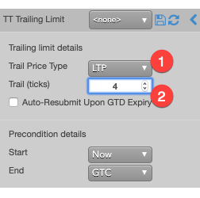
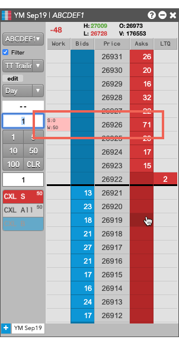

A TT Trailing Limit order submits a native limit exchange order into the market then dynamically adjusts the price to stay within a specified distance of the market if it moves away. This means:
-
A Buy Trailing Limit sets the price a fixed amount below the market price. The order moves higher if the market moves above the highest recent price. The order will not adjust if the market moves lower.
-
A Sell Trailing Limit sets the price a fixed amount above the market price. The order moves lower if the market moves below the lowest recent price. The order does not adjust if the market moves up.
The following describes the life cycle of a TT Trailing Limit order:
- A TT Trailing Limit order submitted with a Start Date/Time is in the Waiting state.
- A TT Trailing Limit order goes into the Working state when the Start Time is reached or when the order is entered without a Start Date/Time. A single child order is placed in the market. The
trailing parameters dynamically re‐price the child order as the market moves.
Behaviors
The following examples illustrate how you can configure a {{page.title}} order with different behaviors for the child and parent orders. Also, each example shows how the order will appear in MD Trader.
-
Specifying the price at when child orders are entered
-
Setting preconditions for the parent order
Triggering a TT Trailing Limit parent order at a price level that trails the market
To enter a trailing limit order:
-
From the Trail Price Type dropdown, select the price off which you want to trigger.
-
For Trail (ticks), enter the number of ticks to trail the selected price type.

If you clicked somewhere on the Sell side, the TT Trailing Limit parent order would resemble the following.

{% include tto-time-params.html %}
TT Trailing Limit order parameters
Trailing Limit details parameters
- {% include Parameters/TrailPriceType_Details.html %}
- {% include Parameters/TrailOffset.html %}
- {% include Parameters/AutoResubmit_Details.html %}
Precondition details parameters
- {% include Parameters/StartTime_Details.html %}
- {% include Parameters/EndTime_Details.html %}
- {% include Parameters/EndTimeAction_Details.html %}